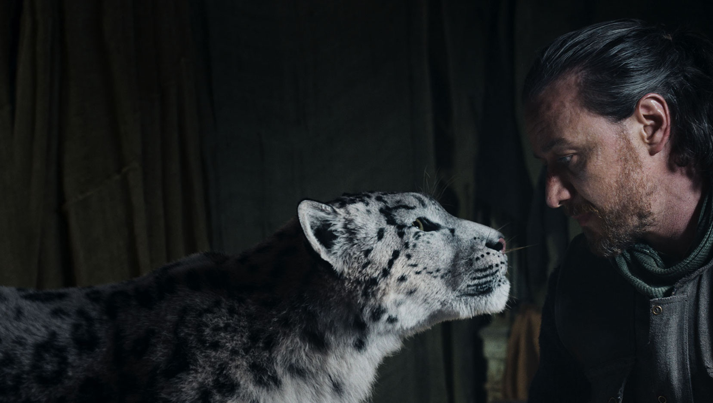
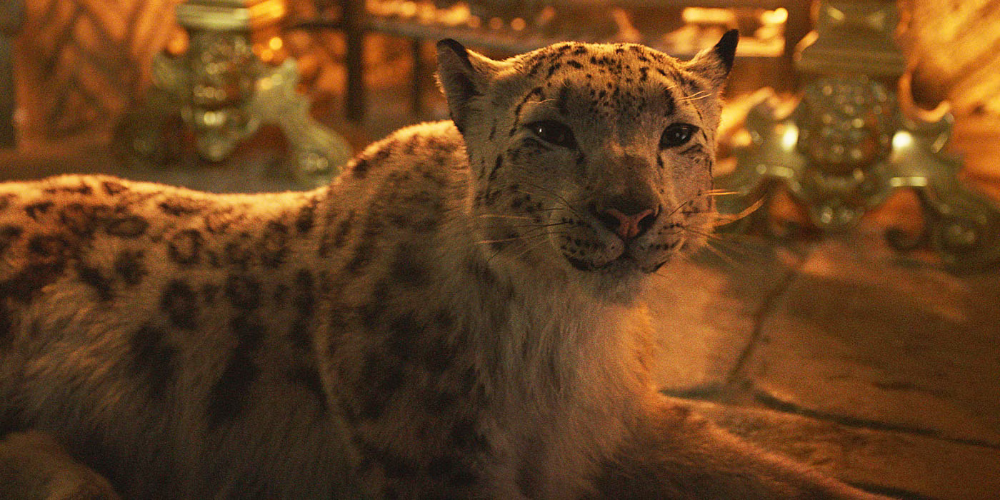

Season 1 was the most fun I've had watching TV possibly ever.
Unbelievable suspense and anticipation and build-up to a crescendo of a masterpiece of a season finale.
Cannot recommend enough.
My friend named Christian told me to watch this show and I just devoured all three seasons.
He told me to watch it because he understands my plan of Cloudland and told me that Lord Asriel, played by James McAvoy, reminded him of me.
Then I realized it was based on the book The Golden Compass which I had read the beginning of when I was little.
In this story, demons and witches are good, and clergy are bad. The Authority in the Kingdom of Heaven is viewed as the main antagonist of Asriel. Asriel wants war with heaven. It's interesting because the Authority in the heaven in the show is just another angel, not the true God of all things, or Creator. So Asriel's war is just.
I fully endorse both season 1 and 2 of this incredible show.
I have a soft spot for media where it's centered around an alpha male using his strength to protect a helpless creature. Whether it be Kratos, the God of War watching over Atreus, or Joel watching over Ellie, the Mandalorian scratches that itch for me and then some with how he protects Baby Yoda.
This is easily one of the greatest shows of all time. Game of Thrones does things that other shows simply can't do. I can't even talk about it without spoiling it so go watch it before finishing reading this because spoilers ahead in the next paragraph. There are so many pictures I could have chosen and I went with this image because it shows two separate characters with two separate storylines. People may complain about how the series ended, but the tv show passed the books because the show took on a life of it's own. Spoilers ahead.
Game of Thrones Click for Spoiler This is unparalleled and actually works beautifully. It's like Harry potter in that you get to grow up with the character. Each Stark boy gets a direwolf puppy and they grow up with them, for example. The Battle of the Bastards has so much buildup and is such a masterpiece it's unbelievable. It is the pinnacle of entertainment to be watching that for the first time while engrossed in the series.
"Death created Time to grow the things that it would kill." - Rustin Cohle
This is one of the best seasons of television ever. Matthew Mcconaughey and Woody Harrelson are both brilliant and the writing and directing are spectacular.